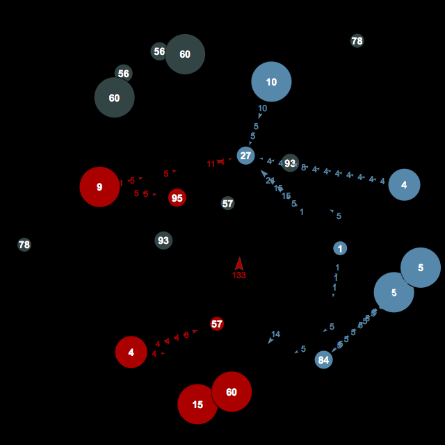

|
|
Google AI challenge 2010: Planet Wars
The Google AI Challenge 2010
was hosted by the
Computer Science Club of the University of Waterloo
from September to December 2010.
Final rankings
were published December 2nd 2010.
Congratulations to all participants, especially to the winner
Gábor Melis (bocsimacko), and to the contest organizers!
Like for the previous contest, I ran an
unofficial TCP server, to aid in testing bots. Here are some statistics:
- 70 days of uptime
- 1,131 hours of CPU time of the server process
- 1,267,439 games played
- 805 users registered
- record of 70 parallel games
You can connect your unmodified bot to this server using
tcp.c (for a Windows binary see
this forum post).
gcc -o tcp tcp.c
./tcp 72.44.46.68 995 username -p password ./MyBot
This engine will connect to the server over TCP/IP to fetch maps
and issue orders. You will be running your bot yourself, and neither
your source code nor executable ever leave your machine.
This can be useful for several reasons:
- You can print debug messages, write log files, dump cores,
run inside a debugger, etc.
- You play against opponents stronger than the examples
provided with the starter kit.
- If your program violates the time limit, you'll see that
first hand. Same if your program crashes.
- You get more games faster, about one every three minutes.
The server code is open source,
too.
Matching of players is based on Elo points, you'll play against the
available opponent with the Elo points closest to yours.
Maps are chosen randomly from a pool which
consists of all maps from the
most recent starter package, plus some new maps suggested in the
forums.
Timing rules are slightly relaxed, due to network latency. You're still
expected to produce a reply as per the official rules.
Your machine's speed may affect the ranking. If your machine is
significantly faster or slower than the official tournament server,
consider the effect.
See Bayesian-Elo
for details about the ratings below.
Output is produced with command sequence: readpgn, mm,
advantage 0, exactdist, ratings.
Updated once a minute.
This server is run by Daniel Hartmeier (dhartmei), contact
daniel@benzedrine.ch
if you have questions.
THE SERVER IS NOW SHUT DOWN, THANK YOU FOR PLAYING, AND SEE YOU IN THE NEXT CONTEST!

More reading:
|